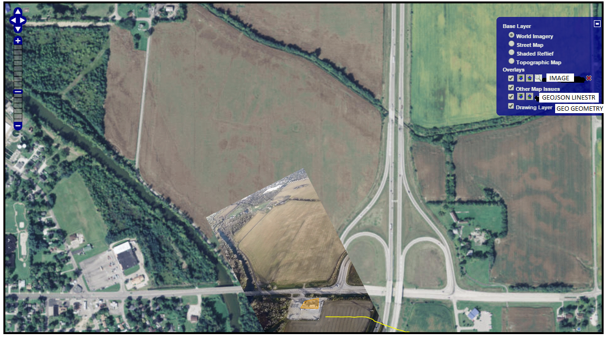

Definition of Version 0.20
Approval given by Paul M. on 12/8/16 to use Google's default method of choosing a Map Type. Google displays map types by default in top left corner.
- Version 0.20.1 Google Terrain Map will replace ArcGIS World Shaded Relief Map
- Version 0.20.2 Google Satellite Map will replace ArcGIS World Imagery
- Version 0.20.3 Google Default(ROADMAP) Map will replace both the ArcGIS Street and the ArcGIS Topographic Map
Current Map System
